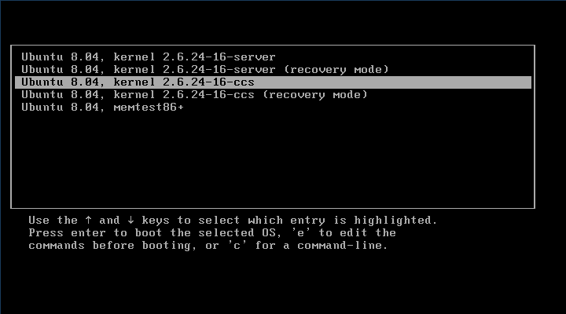
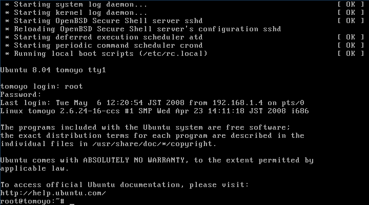
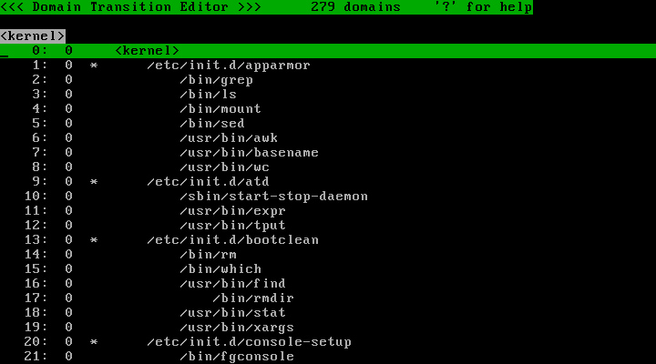
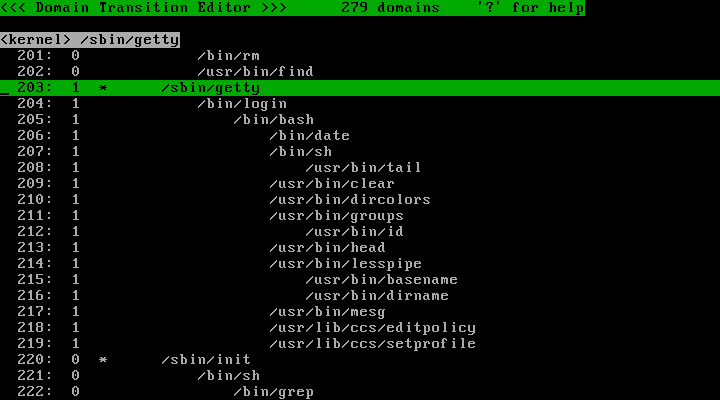
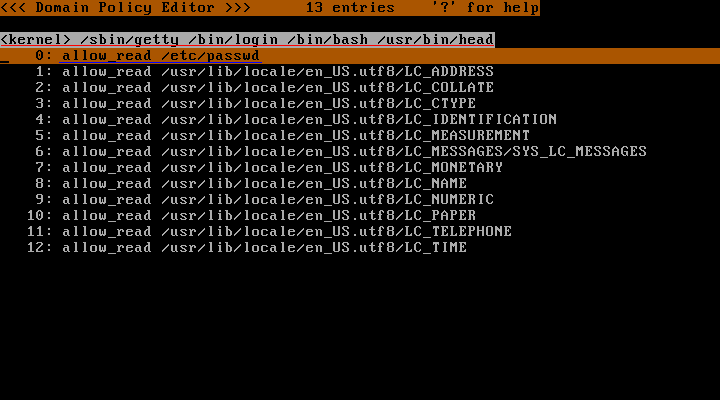
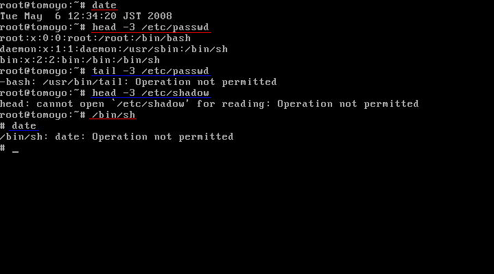

ˆÈ‰º‚Å‚Í�AUbuntu 8.04‚ÉTOMOYO Linux 1.6.0‚𓱓ü‚·‚é�è�‡‚ğ‰ğ�à‚µ‚Ü‚·�B ‚±‚Ì�è�‡�‘‚É�]‚Á‚Ä‘€�ì‚·‚ê‚Î�ATOMOYO Linux‚ÌŠî–{“I‚È‹@”\‚ğ‘ÌŒ±‚µ�AŠÈ’P‚È�İ’è‚Ɖ^—p‚ª�s‚¦‚é‚悤‚É‚È‚è‚Ü‚·�B
“±“ü‚Ì—¬‚ê‚͈ȉº‚Ì’Ê‚è‚Å‚·�B
TOMOYO Linux‚ÍLinuxƒJ�[ƒlƒ‹‚ւ̃pƒbƒ`‚Æ‚µ‚Ä’ñ‹Ÿ‚³‚ê‚Ä‚¨‚è�A–{—ˆ‚ÍLinuxƒJ�[ƒlƒ‹‚̃\�[ƒXƒR�[ƒh‚Ƀpƒbƒ`‚ğ“K—p‚·‚é�ì‹Æ‚ª•K—v‚É‚È‚è‚Ü‚·�B ‚µ‚©‚µUbuntu 8.04‚Ì�ê�‡‚Í�ATOMOYO Linux‚̃pƒbƒ`‚ğ“–‚Ä‚½ƒRƒ“ƒpƒCƒ‹�ς݃J�[ƒlƒ‹ƒpƒbƒP�[ƒW‚ª’ñ‹Ÿ‚³‚ê‚Ä‚¢‚é‚Ì‚Å�A�¡‰ñ‚Í‚»‚ê‚ğ—˜—p‚µ‚Ü‚·�B
‚Ü‚¸‚̓pƒbƒP�[ƒW‚ğƒ_ƒEƒ“ƒ��[ƒh‚µ‚Ü‚·�B
# wget http://osdn.dl.sourceforge.jp/tomoyo/30299/linux-image-2.6.24-16-ccs1.6.0_2.6.24-16.30_i386.deb # wget http://osdn.dl.sourceforge.jp/tomoyo/30299/linux-ubuntu-modules-2.6.24-16-ccs1.6.0_2.6.24-16.23_i386.deb
�Ÿ‚É�Aƒ_ƒEƒ“ƒ��[ƒh‚µ‚Ä‚«‚½ƒpƒbƒP�[ƒW‚ğƒCƒ“ƒXƒg�[ƒ‹‚µ‚Ü‚·�B
# dpkg --install linux-image-2.6.24-16-ccs1.6.0_2.6.24-16.30_i386.deb linux-ubuntu-modules-2.6.24-16-ccs1.6.0_2.6.24-16.23_i386.deb
ƒCƒ“ƒXƒg�[ƒ‹‚É�¬Œ÷‚·‚ê‚Î/boot/grub/menu.lst‚Ɉȉº‚Ì‹L�q‚ª’ljÁ‚³‚ê‚Ä‚¢‚é‚Í‚¸‚Å‚·�B
title Ubuntu 8.04, kernel 2.6.24-16-ccs root (hd0,0) kernel /boot/vmlinuz-2.6.24-16-ccs root=/dev/sda1 ro quiet splash initrd /boot/initrd.img-2.6.24-16-ccs
�¡ŒãƒJ�[ƒlƒ‹‚Ì‘I‘ğ‚ğ�s‚¢‚â‚·‚‚·‚邽‚ß‚É�A /boot/grub/menu.lst‚Ì"timeout="‚Ì�s‚ğƒRƒ�ƒ“ƒgƒAƒEƒg‚µ‚Ä‚¨‚«‚Ü‚·�B
#timeout=3
/sbin/ccs-init ‚̃vƒ�ƒ“ƒvƒg‚âƒRƒ“ƒ\�[ƒ‹ƒ�ƒOƒCƒ“‰æ–Ê‚ğ•\�¦‚Å‚«‚é‚悤‚É‚·‚邽‚ß‚É�AƒJ�[ƒlƒ‹‚̃Rƒ}ƒ“ƒhƒ‰ƒCƒ“‚©‚ç splash ƒIƒvƒVƒ‡ƒ“‚ğ�í�œ‚µ‚Ä‚‚¾‚³‚¢�B
ƒJ�[ƒlƒ‹‚Ì�Ÿ‚Í�ATOMOYO Linux‚̃c�[ƒ‹‚ğƒCƒ“ƒXƒg�[ƒ‹‚µ‚Ü‚·�B ƒc�[ƒ‹‚É‚Í�Aƒ|ƒŠƒV�[‚ÌŠÇ—�‚ğ�s‚¤ƒvƒ�ƒOƒ‰ƒ€‚ª�û˜^‚³‚ê‚Ä‚¢‚Ü‚·�B
ƒoƒCƒiƒŠƒpƒbƒP�[ƒW‚ª—pˆÓ‚³‚ê‚Ä‚¢‚Ü‚·‚Ì‚Å�A‚»‚ê‚ğ—˜—p‚µ‚Ü‚·�B
# wget http://osdn.dl.sourceforge.jp/tomoyo/30299/ccs-tools_1.6.0-1_Ubuntu8.04_i386.deb # dpkg -i ccs-tools_1.6.0-1_Ubuntu8.04_i386.deb
ƒc�[ƒ‹‚Í /usr/lib/ccs ƒfƒBƒŒƒNƒgƒŠ‚É‚³‚ê‚Ü‚·�B
ˆÈ�ã‚ÅTOMOYO Linux‚̃Cƒ“ƒXƒg�[ƒ‹‚Í�I—¹‚Å‚·�B‘±‚¢‚Ä�İ’è‚Ɉڂè‚Ü‚·�B
‚±‚Ì�ß‚Ì‘€�ì‚ğ�©“®‚Å�s‚¤ƒXƒNƒŠƒvƒg‚ª•t‘®‚µ‚Ä‚¢‚é‚Ì‚Å‚»‚ê‚ğ�À�s‚µ‚Ü‚·�B
# init_policy.sh --file-only-profile
init_policy.sh‚Í10•ªˆÈ�ã��ŠÔ‚ğ—v‚·‚é�ê�‡‚ª‚ ‚è‚Ü‚·‚Ì‚Å‹C’·‚É‚¨‘Ò‚¿‚‚¾‚³‚¢�B
TOMOYO Linux‚Ì�İ’è‚ğ•Û‘¶‚·‚éƒfƒBƒŒƒNƒgƒŠ‚Í/etc/ccs‚Å‚·�B
TOMOYO Linux‚É‚Í‘½‚‚Ì‹@”\‚ª‚ ‚è�A‚Ç‚Ì‹@”\‚ğON/OFF‚É‚·‚é‚Ì‚©‚Ì�İ’è‚ğƒvƒ�ƒtƒ@ƒCƒ‹‚Æ‚æ‚Ñ‚Ü‚·�B ƒvƒ�ƒtƒ@ƒCƒ‹‚Í•¡�”�ì�¬‚µ‚Ä�Ø‚è‘Ö‚¦‚Ä�g‚¤‚±‚Æ‚ª‚Å‚«‚Ü‚·�B ‚·‚ׂẴvƒ�ƒtƒ@ƒCƒ‹‚Í/etc/ccs/profile.conf‚Æ‚¢‚¤’Pˆê‚̃tƒ@ƒCƒ‹‚É•Û‘¶‚µ‚Ü‚·�B
�¡‰ñ‚̓tƒ@ƒCƒ‹‚ɑ΂·‚éƒAƒNƒZƒX�§Œä‚Ì‹@”\‚Ì‚İ‚ğ—˜—p‚·‚邽‚ß�A /etc/ccs/profile.conf‚Ì“à—e‚͈ȉº‚̂悤‚È‚Á‚Ä‚¢‚é‚Í‚¸‚Å‚·�B
0-COMMENT=-----DISABLED_MODE----- 0-MAC_FOR_FILE=disabled 0-TOMOYO_VERBOSE=disabled 1-COMMENT=-----LEARNING_MODE----- 1-MAC_FOR_FILE=learning 1-TOMOYO_VERBOSE=disabled 2-COMMENT=-----PERMISSIVE_MODE----- 2-MAC_FOF_FILE=permissive 2-TOMOYO_VERBOSE=enabled 3-COMMENT=-----ENFORCE_MODE----- 3-MAC_FOR_FILE=enforcing 3-TOMOYO_VERBOSE=enabled
profile.conf‚Ì1�s‚͈ȉº‚̂悤‚È�\•¶‚É‚È‚Á‚Ä‚¢‚Ü‚·�B
�iƒvƒ�ƒtƒ@ƒCƒ‹”Ô�†�j-�i�İ’è�€–Ú�j=�i�§Œäƒ‚�[ƒh�j
‚·‚È‚í‚¿�A�s“ª‚Ì”Ô�†‚ªƒvƒ�ƒtƒ@ƒCƒ‹‚ğ�Ø‚è‘Ö‚¦‚邽‚߂̃vƒ�ƒtƒ@ƒCƒ‹”Ô�†‚Å�A '=' ‚Ì�¶‚ª�İ’è�€–Ú�A'=' ‚̉E‚ª�§Œäƒ‚�[ƒh‚Å‚·�B
�İ’è�€–ÚCOMMENT‚Í�Aƒvƒ�ƒtƒ@ƒCƒ‹‚ğ‹æ•Ê‚µ‚â‚·‚‚·‚邽‚߂̃Rƒ�ƒ“ƒg‚Å�ATOMOYO Linux‚Ì‹@”\‚ɂ͉e‹¿‚ğ—^‚¦‚Ü‚¹‚ñ�B
�İ’è�€–ÚMAC_FOR_FILE‚Í�uƒtƒ@ƒCƒ‹‚ɑ΂·‚éƒAƒNƒZƒX�§Œä�v‚ğ•\‚µ‚Ä‚¨‚è�A �§Œäƒ‚�[ƒh‚ªdisabled‚È‚ç–³Œø�Alearning‚È‚çŠw�K�Apermissive‚È‚çŠm”F�iƒAƒNƒZƒX‹‘”Ûƒ�ƒO‚ğ�o—Í‚·‚邪�À�Û‚É‚Í‹‘”Û‚µ‚È‚¢�j�Aenforcing‚È‚ç‹�§�A‚Æ‚¢‚¤�ݒ肪�s‚¦‚Ü‚·�B
�İ’è�€–ÚTOMOYO_VERBOSE‚Í�uƒAƒNƒZƒX‹‘”Û‚Ì�î•ñ‚ğƒRƒ“ƒ\�[ƒ‹‚É�o—Í‚·‚é‚©‚Ç‚¤‚©�v‚ğ•\‚µ‚Ä‚¨‚è�A �§Œäƒ‚�[ƒh‚ªdisabled‚È‚ç�o—Í‚È‚µ�Aenabled‚È‚ç�o—Í‚ ‚è‚É‚È‚è‚Ü‚·�B
�ã‹L�İ’è‚Å‚Í�Aƒvƒ�ƒtƒ@ƒCƒ‹”Ô�†‚ª0�`3‚Ì4‚‚̃vƒ�ƒtƒ@ƒCƒ‹‚ğ�ì�¬‚µ‚Ä‚¨‚è�A‚»‚ꂼ‚ê‚̈Ӗ¡‚͈ȉº‚̂悤‚É‚È‚è‚Ü‚·�B
| ƒvƒ�ƒtƒ@ƒCƒ‹0 | ƒtƒ@ƒCƒ‹‚ɑ΂·‚éƒAƒNƒZƒX�§Œä‚𖳌ø‚É‚·‚é�AƒRƒ“ƒ\�[ƒ‹‚ɃAƒNƒZƒX‹‘”Û‚ğ�o—Í‚µ‚È‚¢ |
|---|---|
| ƒvƒ�ƒtƒ@ƒCƒ‹1 | ƒtƒ@ƒCƒ‹‚ɑ΂·‚éƒAƒNƒZƒX�§Œä‚ğŠw�Kƒ‚�[ƒh‚É‚·‚é�AƒRƒ“ƒ\�[ƒ‹‚ɃAƒNƒZƒX‹‘”Û‚ğ�o—Í‚µ‚È‚¢ |
| ƒvƒ�ƒtƒ@ƒCƒ‹2 | ƒtƒ@ƒCƒ‹‚ɑ΂·‚éƒAƒNƒZƒX�§Œä‚ğŠm”Fƒ‚�[ƒh‚É‚·‚é�AƒRƒ“ƒ\�[ƒ‹‚ɃAƒNƒZƒX‹‘”Û‚ğ�o—Í‚·‚é |
| ƒvƒ�ƒtƒ@ƒCƒ‹3 | ƒtƒ@ƒCƒ‹‚ɑ΂·‚éƒAƒNƒZƒX�§Œä‚ğ‹�§ƒ‚�[ƒh‚É‚·‚é�AƒRƒ“ƒ\�[ƒ‹‚ɃAƒNƒZƒX‹‘”Û‚ğ�o—Í‚·‚é |
ƒvƒ�ƒtƒ@ƒCƒ‹1‚ÌŠw�Kƒ‚�[ƒh‚Å�s‚Á‚½ƒAƒNƒZƒX‚ğŒ³‚Éƒ|ƒŠƒV�[‚ğ�ì�¬‚µ�A ƒvƒ�ƒtƒ@ƒCƒ‹2‚ÌŠm”Fƒ‚�[ƒh‚ʼn¼‰^—p‚µ‚Ä•K—v‚ȃ|ƒŠƒV�[‚ª�ì�¬‚Å‚«‚Ä‚¢‚é‚©‚ğŠm‚©‚ß�A ƒvƒ�ƒtƒ@ƒCƒ‹3‚Ì‹�§ƒ‚�[ƒh‚Å–{‰^—p‚Æ‚µ‚ăAƒNƒZƒX�§Œä‚ğ�s‚¤�A ‚Æ‚¢‚¤‚Ì‚ªŠî–{“I‚ȉ^—p‚Ì—¬‚ê‚Å‚·�B
ƒ|ƒŠƒV�[‚ğ•Ï�X‚·‚邱‚Æ‚ª‚Å‚«‚éƒvƒ�ƒOƒ‰ƒ€‚Í�A/etc/ccs/manager.conf‚Æ‚¢‚¤ƒtƒ@ƒCƒ‹‚Å�w’肵‚Ü‚·�B ˆÈ‰º‚̃vƒ�ƒOƒ‰ƒ€‚ª�w’肳‚ê‚Ä‚¢‚é‚Í‚¸‚Å‚·�B
/usr/lib/ccs/loadpolicy /usr/lib/ccs/editpolicy /usr/lib/ccs/setlevel /usr/lib/ccs/setprofile /usr/lib/ccs/ld-watch /usr/lib/ccs/ccs-queryd
/etc/ccs/exception_policy.conf ‚ɂ͈ȉº‚Ì12�í—Ş‚Ì—áŠO‚ª�w’肳‚ê‚Ä‚¢‚Ü‚·�B
TOMOYO Linux‚̃�ƒO‚Í�AƒAƒNƒZƒX‚ª‹–‰Â‚³‚ꂽ—v‹�‚̃�ƒO‚Æ�AƒAƒNƒZƒX‚ª‹‘”Û‚³‚ꂽ—v‹�‚̃�ƒO‚Ì2�í—Ş‚É•ª‚¯‚邱‚Æ‚ª‚Å‚«‚Ü‚·�B �¡‰ñ‚Í�AƒAƒNƒZƒX‹‘”Ûƒ�ƒO‚Ì‚İ‚ğ•Û‘¶‚·‚é�İ’è‚ğ�s‚¢‚Ü‚·�B
ƒ�ƒO‚ğ•Û‘¶‚·‚é‚É‚Í�Accs-tools‚Ìccs-auditd‚Æ‚¢‚¤ƒf�[ƒ‚ƒ“ƒvƒ�ƒOƒ‰ƒ€‚ğ�g—p‚µ‚Ü‚·�B ƒAƒNƒZƒX‹‘”Ûƒ�ƒO‚Ì‚İ‚ğ•Û‘¶‚·‚é�İ’è‚Åccs-auditd‚ğLinux‚Ì‹N“®��‚É�À�s‚·‚é‚É‚Í�A ‚Ü‚¸�AˆÈ‰º‚̃Rƒ}ƒ“ƒh‚Å/etc/init.d‚ɃVƒFƒ‹ƒXƒNƒŠƒvƒg‚ğ�ì�¬‚µ�A�À�sŒ ŒÀ‚ğ—^‚¦‚Ü‚·�B
# cat > /etc/init.d/ccs-auditd << EOF #!/bin/sh /usr/lib/ccs/ccs-auditd /dev/null /var/log/tomoyo/reject_log.txt EOF # chmod +x /etc/init.d/ccs-auditd
‚»‚µ‚Ä�AˆÈ‰º‚̃Rƒ}ƒ“ƒh‚ÅLinux‚Ì‹N“®��‚ɌĂÑ�o‚·ƒVƒ“ƒ{ƒŠƒbƒNƒŠƒ“ƒN‚ğ�ì�¬‚µ‚Ü‚·�B
# update-rc.d ccs-auditd start 99 2 3 4 5 .
Adding system startup for /etc/init.d/ccs-auditd ...
/etc/rc2.d/S99ccs-auditd -> ../init.d/ccs-auditd
/etc/rc3.d/S99ccs-auditd -> ../init.d/ccs-auditd
/etc/rc4.d/S99ccs-auditd -> ../init.d/ccs-auditd
/etc/rc5.d/S99ccs-auditd -> ../init.d/ccs-auditd
‚±‚Ì�İ’è‚Å‚Í�A/var/log/tomoyo/reject_log.txt‚ɃAƒNƒZƒX‹‘”Ûƒ�ƒO‚ª•Û‘¶‚³‚ê‚Ü‚·�B ƒ�ƒO‚ğ•Û‘¶‚·‚éƒfƒBƒŒƒNƒgƒŠ‚ğ‚ ‚ç‚©‚¶‚ß�ì‚Á‚Ä‚¨‚«‚Ü‚·�B
# mkdir -p /var/log/tomoyo
ˆÈ�ã‚ÅTOMOYO Linux‚ğ�g‚¤‚½‚ß‚ÌŠî–{“I‚È�İ’è‚Í�I‚í‚è‚Å‚·�B
‚»‚ê‚Å‚Í�A‚¢‚æ‚¢‚æTOMOYO LinuxƒJ�[ƒlƒ‹‚Å‹N“®‚µ‚Ä‚İ‚Ü‚µ‚傤�B
‚Ü‚¸‚ÍLinux‚ğ�Ä‹N“®‚µ‚Ü‚·�B
# reboot
ƒJ�[ƒlƒ‹‚Ì‘I‘ğ‰æ–Ê‚ÅTOMOYO Linux‚̃J�[ƒlƒ‹‚ğ‘I‘ğ‚µ‚ÄEnter‚ğ‰Ÿ‚µ‚Ü‚·�B

‹N“®ƒvƒ�ƒZƒX‚ª�I—¹‚·‚é‚ƃ�ƒOƒCƒ“ƒvƒ�ƒ“ƒvƒg‚ª•\�¦‚³‚ê‚é‚Ì‚Å�Aroot‚Ń�ƒOƒCƒ“‚µ‚Ä‚‚¾‚³‚¢�B
ƒOƒ‰ƒtƒBƒJƒ‹‰æ–Ê‚©‚çƒRƒ“ƒ\�[ƒ‹‰æ–Ê‚Ö�Ø‚è‘Ö‚¦‚é‚É‚Í�A Ctrl-Alt-F1 ‚ğ‰Ÿ‚µ‚Ä‚‚¾‚³‚¢�B VMware ‚Ì�ê�‡‚Í Alt-F1-Ctrl‚Ü‚½‚ÍCtrl-F1-Alt‚Ì�‡‚ɉŸ‚µ‚Ä‚‚¾‚³‚¢�B

�¡‰ñ‚Í�AˆÈ‰º‚Ì‘€�ì‚ğTOMOYO Linux‚ÉŠw�K‚³‚¹�A‹�§ƒ‚�[ƒh‚Å‚ÍŠw�K‚³‚¹‚½‘€�ìˆÈŠO‚ª‹‘”Û‚³‚ê‚邱‚Æ‚ğŠm‚©‚ß‚Ü‚·�B
‚Ü‚¸‚ÍŠw�Kƒ‚�[ƒh‚Ì�İ’è‚ğ�s‚¢‚Ü‚·�B
ƒvƒ�ƒtƒ@ƒCƒ‹1‚ªŠw�Kƒ‚�[ƒh‚Å‚·�B ‚±‚̃vƒ�ƒtƒ@ƒCƒ‹‚ğˆÈ‰º‚̃Rƒ}ƒ“ƒh‚Å/sbin/getty‚©‚ç‹N“®‚³‚ê‚éƒvƒ�ƒOƒ‰ƒ€‚ÉŠ„‚è“–‚Ä‚Ü‚·�B
# /usr/lib/ccs/setprofile -r 1 '<kernel> /sbin/getty'
‚±‚̃Rƒ}ƒ“ƒh‚Í�A
/sbin/getty‚©‚ç‹N“®‚³‚ê‚éƒvƒ�ƒOƒ‰ƒ€‚·‚ׂĂɃvƒ�ƒtƒ@ƒCƒ‹1‚ğŠ„‚è“–‚Ä‚é
‚Æ‚¢‚¤ˆÓ–¡‚Å‚·�B/sbin/getty‚̓�ƒOƒCƒ“ƒVƒFƒ‹‚ğ‹N“®‚·‚éƒvƒ�ƒOƒ‰ƒ€‚Å�A /sbin/gettyˆÈ‰º‚Ƀvƒ�ƒtƒ@ƒCƒ‹1‚ğŠ„‚è“–‚Ă邱‚Æ‚Å�Aƒ�ƒOƒCƒ“Œã‚Ì‘€�ì‚ğŠw�K‚·‚é�İ’è‚É‚È‚è‚Ü‚·�B �İ’è‚Í‘¦��‚É—LŒø‚É‚È‚é‚Ì‚Å�A�ã‹LsetprofileƒRƒ}ƒ“ƒh‚ğ�À�s‚µ‚½‚ ‚Æ‚ÍŠù‚ÉŠw�Kƒ‚�[ƒh‚É‚È‚Á‚Ä‚¢‚Ü‚·�B
<kernel> /sbin/getty‚ğˆø—p•„‚ň͂܂Ȃ¢‚Æ�AƒVƒFƒ‹‚̃Šƒ_ƒCƒŒƒNƒg‹@”\‚ª“‚¢‚Ä /sbin/getty‚Ì“à—e‚ª�‘‚«Š·‚¦‚ç‚ê‚Ä‚µ‚Ü‚¢‚Ü‚·‚Ì‚Å‚‚ê‚®‚ê‚à‚²’�ˆÓ‚‚¾‚³‚¢�B
‚»‚ê‚Å‚Í�A‘O�q‚Ì4‚‚̑€�ì‚ğŠw�K‚³‚¹‚Ü‚µ‚傤�BŠw�K‚Í’Ê�í‚ÌLinux‚̂悤‚É‘€�ì‚·‚邱‚Æ‚Å�s‚¦‚Ü‚·�B
ˆêŒ©•�’Ê‚ÌLinux‚Æ•Ï‚í‚è‚È‚‘€�ì‚Å‚«‚Ü‚·‚ª�A — ‚Å‚ÍTOMOYO Linux‚ªƒAƒNƒZƒX‹–‰Â‚ğŠÄ�‹‚µ�A ‘€�삲‚ƂɃ|ƒŠƒV�[‚Æ‚µ‚ă�ƒ‚ƒŠ�ã‚É‹L‰¯‚µ‚Ä‚¢‚Ü‚·�B
�¶�¬‚³‚ꂽƒ|ƒŠƒV�[‚Ì�Q�Æ�E•Ò�W‚É‚Í�Accs-tools‚Ìeditpolicy‚ğ—p‚¢‚Ü‚·�B
# /usr/lib/ccs/editpolicy
editpolicy‚ğ‹N“®‚·‚é‚Æ�ATOMOYO Linux‹N“®Œã‚É�Aƒvƒ�ƒZƒX‚ª‚ǂ̂悤‚ɌĂÑ�o‚³‚ꂽ‚©‚ª•\�¦‚³‚ê‚Ü‚·�B ‚±‚Ì�uƒvƒ�ƒZƒX‚̌ĂÑ�o‚µ�v‚ğ�ATOMOYO Linux‚Å‚Í�uƒhƒ�ƒCƒ“‘JˆÚ�v‚Æ‚æ‚Ñ‚Ü‚·�B

ƒhƒ�ƒCƒ“‘JˆÚ‚Ì’†‚©‚ç�Agetty‚ğ’T‚µ‚Ä‚İ‚Ä‚‚¾‚³‚¢�Bƒhƒ�ƒCƒ“‘JˆÚ‚©‚çgetty‚ğŒŸ�õ‚·‚é‚É‚Í�A 'f'ƒL�[‚ğ‰Ÿ‚µ‚Ä�A‰º‚É�o‚½ƒvƒ�ƒ“ƒvƒg‚Å"getty"‚Æ“ü—Í‚µ‚ÄEnterƒL�[‚ğ‰Ÿ‚µ‚Ü‚·�B

�s”Ô�†‚̉E‘¤‚É•\�¦‚³‚ê‚Ä‚¢‚é�”�š‚Í�A‚»‚̃hƒ�ƒCƒ“‚ÉŠ„‚è“–‚Ä‚ç‚ê‚Ä‚¢‚éƒvƒ�ƒtƒ@ƒCƒ‹”Ô�†‚Å‚·�B /sbin/getty ˆÈ‰º‚̃hƒ�ƒCƒ“‚ª 1 ‚É‚È‚Á‚Ä‚¢‚é‚Ì‚Í�A�æ‚Ù‚Ç setprofile ƒRƒ}ƒ“ƒh‚ğ—p‚¢‚Ä 1 ‚ğŠ„‚è“–‚Ä‚½‚½‚ß‚Å‚·�B
/sbin/getty‰º‚Ì/bin/loginˆÈ‰º‚Å‚Í�Aƒ�ƒOƒCƒ“‚µ‚Ä‚©‚ç‚̃vƒ�ƒZƒX�À�s—š—ğ‚ª•ª‚©‚è‚Ü‚·�B ‚»‚Ì’†‚©‚炳‚ç‚É�A/usr/bin/headƒRƒ}ƒ“ƒh‚ğ’T‚µ‚Ä‚İ‚Ä‚‚¾‚³‚¢�B headƒRƒ}ƒ“ƒh‚Ì�s‚ÅEnterƒL�[‚ğ‰Ÿ‚·‚Æ�AˆÈ‰º‚̉æ–Ê‚ª•\�¦‚³‚ê‚Ü‚·�B

‚±‚ê‚Í�æ‚Ù‚Ç‚Ì‘€�ì‚ÅŠw�K‚µ‚½ƒ|ƒŠƒV�[‚Å�A
<kernel> /sbin/getty /bin/login /bin/bash /usr/bin/head‚Æ‚¢‚¤ƒhƒ�ƒCƒ“�i�Ô‰º�ü�j‚Í�A
- /etc/passwd‚ğ“Ç‚İ��‚݃‚�[ƒh‚ŃI�[ƒvƒ“‚Å‚«‚é�i�‰º�ü�j
‚Æ‚¢‚¤‚±‚Æ‚ğˆÓ–¡‚µ‚Ä‚¢‚Ü‚·�B
TOMOYO Linux‚Å‚Í�A �uƒvƒ�ƒOƒ‰ƒ€‚Ì�â‘΃pƒX‚Å•\Œ»‚µ‚½ƒvƒ�ƒZƒX‚Ì�À�s—š—ğ�v‚ğƒhƒ�ƒCƒ“‚Æ‚æ‚Ñ‚Ü‚·�B ‚·‚ׂẴvƒ�ƒZƒX‚Í‚¢‚¸‚ê‚©1‚‚̃hƒ�ƒCƒ“‚É�Š‘®‚µ‚Ä‚¨‚è�A ƒAƒNƒZƒX�§Œä‚̓hƒ�ƒCƒ“‚²‚ƂɃ|ƒŠƒV�[‚Æ‚µ‚Ä�ݒ肵‚Ü‚·�B
ƒhƒ�ƒCƒ“‚É‚¨‚¯‚éƒtƒ@ƒCƒ‹‚ɑ΂·‚éƒAƒNƒZƒX‹–‰Â‚Í�A ’Ê�í‚ÌLinux‚É‚¨‚¯‚éƒtƒ@ƒCƒ‹‚ɑ΂·‚éƒp�[ƒ~ƒbƒVƒ‡ƒ“‚Æ “¯—l‚Ì3�í—Ş�i“Ç‚İ��‚İ�E�‘‚«��‚İ�E�À�s�j‚Ì‘¼‚É‚à�A ƒtƒ@ƒCƒ‹‚Ì�V‹K�ì�¬�E�í�œ�E–¼‘O•Ï�X‚È‚Ç‚à�İ’è‚Å‚«‚Ü‚·�B
ƒ|ƒŠƒV�[‚̓�ƒ‚ƒŠ�ã‚É’u‚©‚ê‚Ä‚¨‚è�A‚±‚Ì‚Ü‚ÜLinux‚ğƒVƒƒƒbƒgƒ_ƒEƒ“‚µ‚Ä‚µ‚Ü‚¤‚Æ�A Šw�K‚µ‚½ƒ|ƒŠƒV�[‚à�¸‚í‚ê‚Ä‚µ‚Ü‚¢‚Ü‚·�Bƒ|ƒŠƒV�[‚ğƒn�[ƒhƒfƒBƒXƒN‚Ì/etc/ccsˆÈ‰º‚É •Û‘¶‚·‚é‚ɂ͈ȉº‚̂悤‚É‚µ‚Ü‚·�B
# /usr/lib/ccs/savepolicy
‚»‚ê‚Å‚Í�A�æ‚Ù‚Ç�©“®Šw�K‚µ‚½ƒ|ƒŠƒV�[‚ğ�g‚Á‚Ä�A‹�§ƒAƒNƒZƒX�§Œä‚ğ‘ÌŒ±‚µ‚Ä‚İ‚Ü‚µ‚傤�B
'q'ƒL�[‚Åeditpolicy‚ğ�I—¹‚µ‚Ä‚©‚ç�AˆÈ‰º‚̃Rƒ}ƒ“ƒh‚ğ�À�s‚µ‚Ü‚·�B
# /usr/lib/ccs/setprofile -r 3 '<kernel> /sbin/getty'
‚±‚Ì‘€�ì‚É‚æ‚è�A/sbin/gettyˆÈ‰º‚̃hƒ�ƒCƒ“‚É‹�§ƒAƒNƒZƒX�§Œä‚ª“K—p‚³‚ê‚é‚悤‚É‚È‚è‚Ü‚·�B
‚±‚Ì�ó‘Ԃňȉº‚Ì‘€�ì‚ğ�s‚Á‚Ä‚İ‚Ü‚·�B

�}’†‚Ì�Ô‰º�ü‚̃Rƒ}ƒ“ƒh‚Í�æ‚Ù‚ÇŠw�Kƒ‚�[ƒh‚Å�s‚Á‚½‘€�ì‚Å‚·‚Ì‚Å�A–â‘è‚È‚�À�s‚Å‚«‚Ü‚·�B ‹t‚É�‰º�ü‚̃Rƒ}ƒ“ƒh‚̓Gƒ‰�[‚É‚È‚è‚Ü‚·�B
ƒGƒ‰�[‚É‚È‚Á‚½‘€�ì‚̃�ƒO‚Í�Accs-auditd‚É‚æ‚Á‚Ä/var/log/tomoyo/reject_log.txt‚É•Û‘¶‚³‚ê‚Ä‚¢‚Ü‚·�B
#2008-05-06 12:34:31# profile=3 mode=enforcing pid=4121 uid=0 gid=0 euid=0 egid=0 suid=0 sgid=0 fsuid=0 fsgid=0 state[0]=0 state[1]=0 state[2]=0 argc=3 envc=15 argv[]={ "tail" "-3" "/etc/passwd" } envp[]={ "SHELL=/bin/bash" "TERM=linux" "HUSHLOGIN=FALSE" "USER=root" "LS_COLORS=no=00:fi=00:di=01;34:ln=01;36:pi=40;33:so=01;35:do=01;35:bd=40;33;01:cd=40;33;01:or=40;31;01:su=37;41:sg=30;43:tw=30;42:ow=34;42:st=37;44:ex=01;32:*.tar=01;31:*.tgz=01;31:*.svgz=01;31:*.arj=01;31:*.taz=01;31:*.lzh=01;31:*.lzma=01;31:*.zip=01;31:*.z=01;31:*.Z=01;31:*.dz=01;31:*.gz=01;31:*.bz2=01;31:*.bz=01;31:*.tbz2=01;31:*.tz=01;31:*.deb=01;31:*.rpm=01;31:*.jar=01;31:*.rar=01;31:*.ace=01;31:*.zoo=01;31:*.cpio=01;31:*.7z=01;31:*.rz=01;31:*.jpg=01;35:*.jpeg=01;35:*.gif=01;35:*.bmp=01;35:*.pbm=01;35:*.pgm=01;35:*.ppm=01;35:*.tga=01;35:*.xbm=01;35:*.xpm=01;35:*.tif=01;35:*.tiff=01;35:*.png=01;35:*.svg=01;35:*.mng=01;35:*.pcx=01;35:*.mov=01;35:*.mpg=01;35:*.mpeg=01;35:*.m2v=01;35:*.mkv=01;35:*.ogm=01;35:*.mp4=01;35:*.m4v=01;35:*.mp4v=01;35:*.vob=01;35:*.qt=01;35:*.nuv=01;35:*.wmv=01;35:*.asf=01;35:*.rm=01;35:*.rmvb=01;35:*.flc=01;35:*.avi=01;35:*.fli=01;35:*.gl=01;35:*.dl=01;35:*.xcf=01;35:*.xwd=01;35:*.yuv=01;35:*.aac=00;36:*.au=00;36:*.flac=00;36:*.mid=00;36:*.midi=00;36:*.mka=00;36:*.mp3=00;36:*.mpc=00;36:*.ogg=00;36:*.ra=00;36:*.wav=00;36:" "MAIL=/var/mail/root" "PATH=/usr/local/sbin:/usr/local/bin:/usr/sbin:/usr/bin:/sbin:/bin:/usr/games" "PWD=/root" "LANG=en_US.UTF-8" "SHLVL=1" "HOME=/root" "LOGNAME=root" "LESSOPEN=|\040/usr/bin/lesspipe\040%s" "LESSCLOSE=/usr/bin/lesspipe\040%s\040%s" "_=/usr/bin/tail" }
<kernel> /sbin/getty /bin/login /bin/bash
allow_execute /usr/bin/tail
#2008-05-06 12:34:31# profile=3 mode=enforcing pid=4121 uid=0 gid=0 euid=0 egid=0 suid=0 sgid=0 fsuid=0 fsgid=0 state[0]=0 state[1]=0 state[2]=0
<kernel> /sbin/getty /bin/login /bin/bash
allow_read /usr/bin/tail
#2008-05-06 12:34:38# profile=3 mode=enforcing pid=4122 uid=0 gid=0 euid=0 egid=0 suid=0 sgid=0 fsuid=0 fsgid=0 state[0]=0 state[1]=0 state[2]=0
<kernel> /sbin/getty /bin/login /bin/bash /usr/bin/head
allow_read /etc/shadow
#2008-05-06 12:34:45# profile=3 mode=enforcing pid=4124 uid=0 gid=0 euid=0 egid=0 suid=0 sgid=0 fsuid=0 fsgid=0 state[0]=0 state[1]=0 state[2]=0 argc=1 envc=15 argv[]={ "date" } envp[]={ "LESSOPEN=|\040/usr/bin/lesspipe\040%s" "USER=root" "MAIL=/var/mail/root" "SHLVL=1" "HOME=/root" "HUSHLOGIN=FALSE" "LOGNAME=root" "_=/bin/sh" "TERM=linux" "PATH=/usr/local/sbin:/usr/local/bin:/usr/sbin:/usr/bin:/sbin:/bin:/usr/games" "LANG=en_US.UTF-8" "LS_COLORS=no=00:fi=00:di=01;34:ln=01;36:pi=40;33:so=01;35:do=01;35:bd=40;33;01:cd=40;33;01:or=40;31;01:su=37;41:sg=30;43:tw=30;42:ow=34;42:st=37;44:ex=01;32:*.tar=01;31:*.tgz=01;31:*.svgz=01;31:*.arj=01;31:*.taz=01;31:*.lzh=01;31:*.lzma=01;31:*.zip=01;31:*.z=01;31:*.Z=01;31:*.dz=01;31:*.gz=01;31:*.bz2=01;31:*.bz=01;31:*.tbz2=01;31:*.tz=01;31:*.deb=01;31:*.rpm=01;31:*.jar=01;31:*.rar=01;31:*.ace=01;31:*.zoo=01;31:*.cpio=01;31:*.7z=01;31:*.rz=01;31:*.jpg=01;35:*.jpeg=01;35:*.gif=01;35:*.bmp=01;35:*.pbm=01;35:*.pgm=01;35:*.ppm=01;35:*.tga=01;35:*.xbm=01;35:*.xpm=01;35:*.tif=01;35:*.tiff=01;35:*.png=01;35:*.svg=01;35:*.mng=01;35:*.pcx=01;35:*.mov=01;35:*.mpg=01;35:*.mpeg=01;35:*.m2v=01;35:*.mkv=01;35:*.ogm=01;35:*.mp4=01;35:*.m4v=01;35:*.mp4v=01;35:*.vob=01;35:*.qt=01;35:*.nuv=01;35:*.wmv=01;35:*.asf=01;35:*.rm=01;35:*.rmvb=01;35:*.flc=01;35:*.avi=01;35:*.fli=01;35:*.gl=01;35:*.dl=01;35:*.xcf=01;35:*.xwd=01;35:*.yuv=01;35:*.aac=00;36:*.au=00;36:*.flac=00;36:*.mid=00;36:*.midi=00;36:*.mka=00;36:*.mp3=00;36:*.mpc=00;36:*.ogg=00;36:*.ra=00;36:*.wav=00;36:" "SHELL=/bin/bash" "LESSCLOSE=/usr/bin/lesspipe\040%s\040%s" "PWD=/root" }
<kernel> /sbin/getty /bin/login /bin/bash /bin/sh
allow_execute /bin/date
‚±‚̂悤‚ÉTOMOYO Linux‚̃tƒ@ƒCƒ‹‚ɑ΂·‚éƒAƒNƒZƒX�§Œä‚ğ—p‚¢‚ê‚Î�A
�s‚Á‚½‚©‚ğŠÄ�‹‚·‚邱‚Æ‚à‚Å‚«‚Ü‚·�B